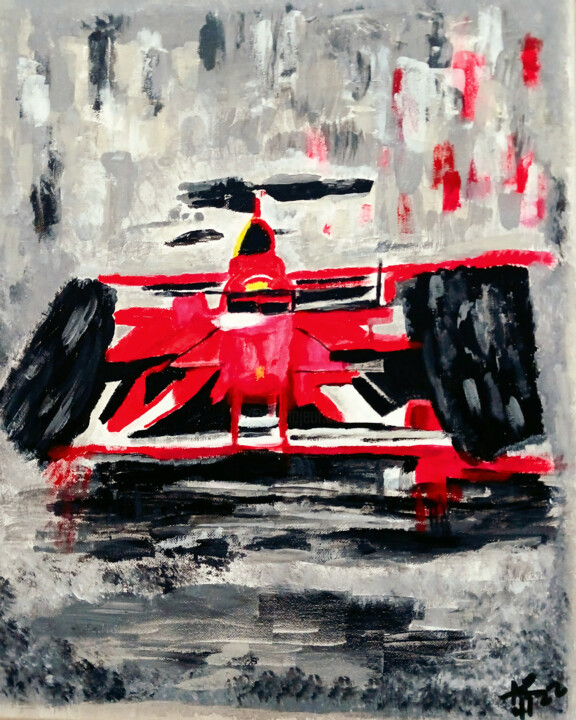

Project Idea
This project explores Formula 1 race strategy, evaluating whether a driver should stay out or pit given the current state of a race.
Experiment · In Progress
Given the state of a race, can we evaluate whether a driver should stay out or pit, and which strategy offers the best expected outcome? This project is in progress.

This project explores Formula 1 race strategy, evaluating whether a driver should stay out or pit given the current state of a race.
The next version of this page will include the dataset, model features, evaluation metrics, and prediction outputs.